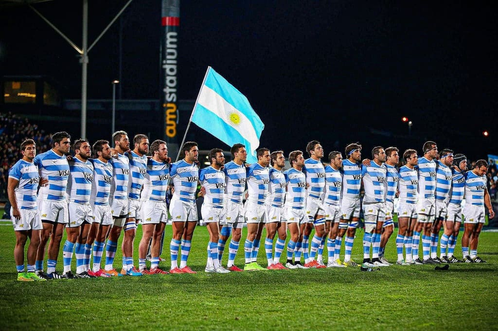
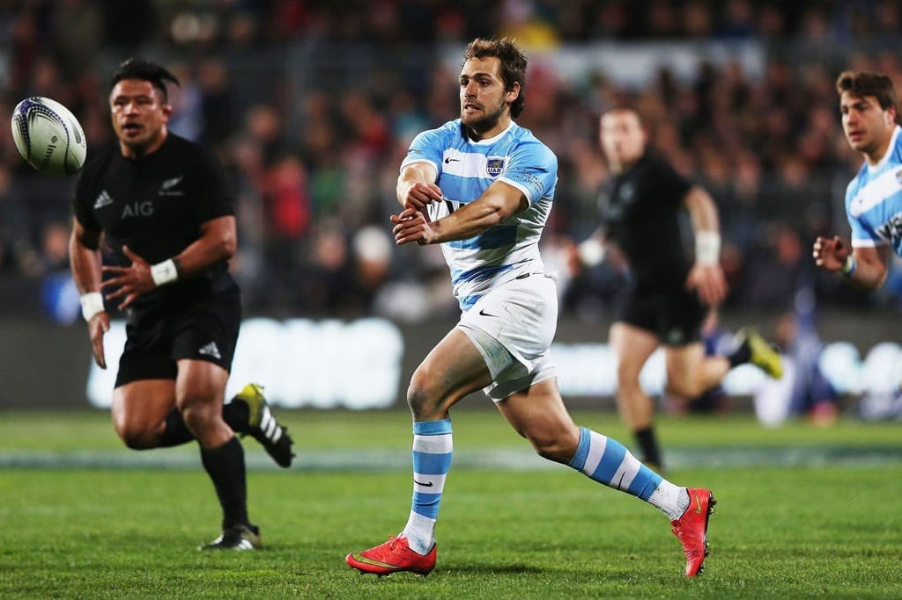

HISTORIA
Argentina jugó su primer partido internacional en 1910 contra un equipo de las Islas Británicas que estaba de gira por nuestro pais. No se da a conocer mucho, pero Los Pumas son la potencia indiscutida del continente americano e invicto frente a todos los paises salvo Canadá, que los han derrotado en tres ocasiones.
Aunque el rugby no es tan popular como el fútbol en Argentina, los impresionantes resultados de Los Pumas desde el Mundial de 1999, han visto crecer significativamente la popularidad del deporte. Argentina se adjudicó todas las ediciones del Campeonato Sudamericano de Rugby que disputó y las del Torneo Panamericano de Rugby, al haber ganado todos los partidos.
Además, Los Pumas alcanzaron en marzo de 2008 su mejor puesto en la clasificación internacional, ubicandose terceros en el Ranking Mundial de la IRB (Internacional Rugby Board, actual World Rugby).
Argentina logró numerosas victorias destacadas, entre las que sobresalen las conseguidas ante las potencias clásicas y otras naciones que destacan en el rugby: Nueva Zelanda, Sudáfrica, Australia, Inglaterra, Francia, Gales, Irlanda, Escocia e Italia, Tonga, Fiji, Samoa, Japón y Barbarians (equipo que reúne a los mejores jugadores del mundo). Los Pumas han experimentado un sostenido crecimiento competitivo desde el mundial de Gales en 1999,cuando consiguieron una histórica clasificación a cuartos de final. Estos avances fueron acompañados con resultados en los test match derrotando regularmente a equipos del Seis Naciones.La obtención de la medalla de Bronce en el Mundial de Francia 2007, los cuartos de Nueva Zelanda 2011, el cuarto lugar de Inglaterra 2015 y los grandes éxitos conseguidos en el Rugby Championship de la SANZAAR (torneo que Los Pumas juegan anualmente contra las tres potencias del Hemisferio Sur) hace de la Argentina una potencia indiscutible del Tier 1.
Argentina ostenta dos marcas mundiales: es el equipo con la mayor serie de victorias consecutivas (20 entre 1960 y 1974) y posee el mayor margen de puntos frente a un rival (152-0 frente a Paraguay, el 1 de mayo de 2002). Frente a las naciones consideradas potencias de este deporte, Argentina les ganó a todas, tras derrotar a los All Blacks 25-15, el 14 de noviembre de 2020, en Australia, luego de que los jugadores tuvieron que entrenar todo ese año en sus casas por la pandemia del COVID-19. Además ante dicho seleccionado obtuvo otra histórica victoria por 25-18, la primera en Nueva Zelanda, el 27 de agosto de 2022. La selección de Zimbabwe es la única que no fue vencida por los Pumas: en el único cruce entre ambos, los africanos (Bajo el nombre de Rhodesia del Sur) vencieron 17-12 en 1965 en una gira de los argentinos por el continente. Mientras que el combinado de los British & Irish Lions (seleccionado que junta a los mejores jugadores de las islas británicas) están invictos ante Argentina, siendo el mejor resultado un empate 25-25 en mayo de 2005, previo a la gira del combinado británico por Nueva Zelanda.
Después de su progresión en competitividad durante la década de los años 2000, junto con su ubicación en el hemisferio sur, Argentina fue invitada a participar en el Rugby Championship de 2012 contra los equipos nacionales de Nueva Zelanda, Sudáfrica y Australia. En su primera temporada, el equipo consiguió solo un empate (16-16 como local ante Sudáfrica), pero en 2014 derrotó a Australia 21-17, y en 2015 se impuso 37-25 como visitante a Sudáfrica. En la edición 2020, logró vencer a Nueva Zelanda, consiguiendo victorias ante las tres potencias desde su participación en el torneo.

Nicolás Sánchez, jugador formado en Tucumán Lawn Tennis Club, es el máximo goleador en la historia de Los Pumas con 835 puntos anotados hasta la fecha.